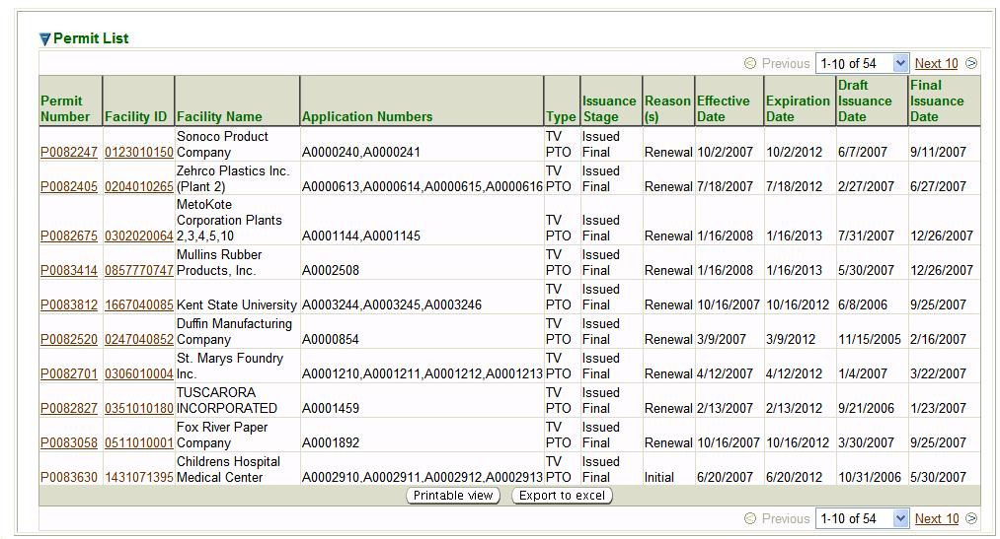

Previous Topic
Next Topic
| Permit Search |
Previous Topic |
Next Topic |
Permit Search is the initial page you see when you select the Permits tab. However, you may also get to the Permit Search page in the second-level menu from any page within the Permits tab no matter how you reached that page.
This is a standard search page, as described in Common Search Paradigm. The Search Criteria and Result List for this search are described below.
This topic contains the following sections:
If you specify either of these, then the system presents two additional fields for you to enter the range of Effective or Expiration dates you are interested in:
either of which may be specified by entering a date in [m]m/[d]d/[yy]yy format or
by selecting a date from the  provided next to the field.
provided next to the field.
The search criteria specified by default select all permits in Issued Final stage that are Effective after the date on which you access the search page. You may of course, modify these values before you submit your search.
The more criteria you are able to specify, the more precise your search will be. Broad searches can retrieve many, many records that can make it difficult to hone in on the information you're really looking for. If, for example, you submit a search with only the default criteria set, you will get a record for each Operating facility of any type in the entire State of Ohio which has a relationship with the Ohio EPA Division of Air Pollution Control. This can be tens of thousands of facilities! So, you should try to be more specific in the criteria you specify.
After you complete the criteria for the search you want, and click on
 ,
the system searches all of the records for all of the permits stored in its database, selects
the ones that meet ALL of the criteria you have specified, and returns the information
about those permits in a datagrid, as illustrated below.
,
the system searches all of the records for all of the permits stored in its database, selects
the ones that meet ALL of the criteria you have specified, and returns the information
about those permits in a datagrid, as illustrated below.

Permit Search Results Datagrid
The data for all of the fields that are in the Search Criteria window are populated in columns in
the datagrid that the search returns. In addition, the datagrid includes a column with the
Application Numbers, for all the permit applications, notifications
or requests covering
any emissions units that are covered in the permit, as well as the Draft Issuance Date
and the Final Issuance Date for the Permit. Note that the
data in the Permit Number and Facility ID
columns in the datagrid are hyperlinks. If you click on those links, the system will
take you to the Permit Detail screen, or the Facility Detail screen that the link references.
This datagrid supports all the common functionality for datagrids as described in
Common User Interface Elements - Datagrids
Back to Top
Copyright © 1996, 2004, Oracle. All rights reserved.